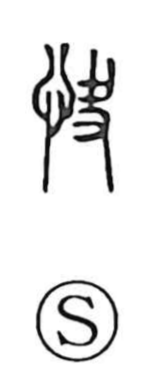

快

Uncategorized
Kun: kokoroyoi | On: kai
pleasant ・ comfortable ・ swift
Explanation
快 is a phono-semantic character: the heart radical (忄) joined with the phonetic 夬 (kai). Shirakawa reads 夬—earlier written like 支—as a hand holding a blade, an image of scraping or scooping. From this same action comes 缺, the ‘scraping out’ of a pottery vessel, the source of 欠. In 快 the idea is that once swellings or abscesses were cut open and the illness cured, the heart became easy and light—hence “pleasant.” He parallels this with 愉, which depicts cutting and draining pus and blood into a tub, bringing true relief; thus 愉快 originally meant the ease felt after being freed from sickness. Because restored health renews vigor, 快 also lends a sense of briskness and speed in compounds such as 快走 and 快足.